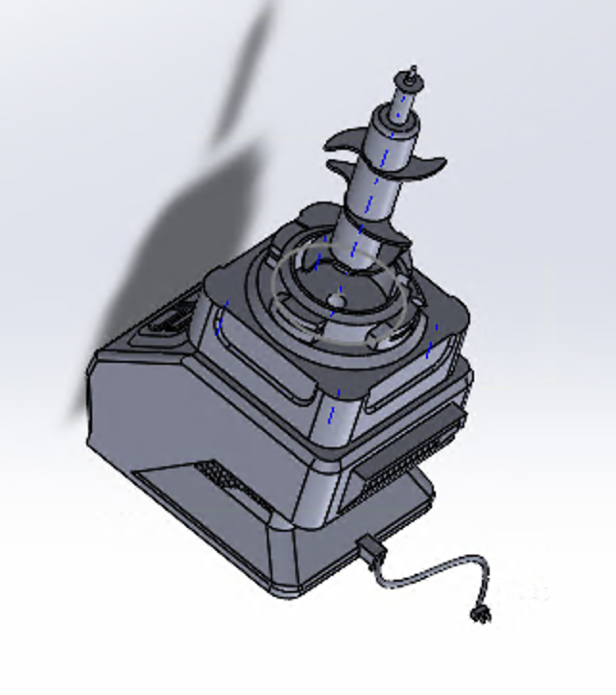
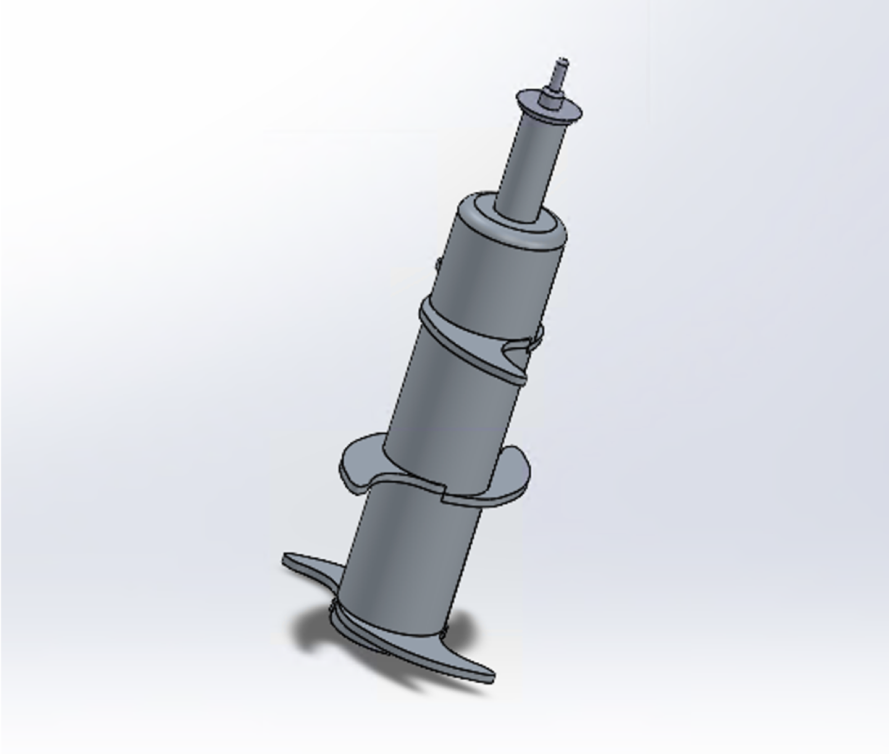
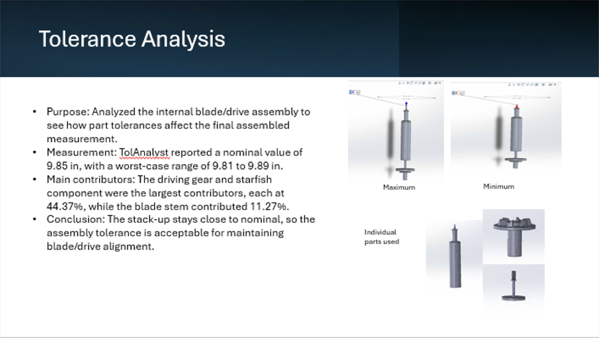

Blender + SolidWorks Project
Modeled a complete kitchen blender in SolidWorks with a team of six classmates for ENGN 1740 (Computer Aided Visualization and Design), then validated the design with motion, structural, tolerance, fluid, and manufacturing analyses.

My Contribution — Motion Analysis
I created a motion study by adding a motor to the blender's driving gear. Starting with constant rotation at 100 rpm, I used SolidWorks' Results and Plots to chart the linear displacement of a blade face relative to the driving gear. I then switched the motor to oscillation — 90° displacement at 10 Hz — and generated the resulting motor torque plots.
Team Analyses
Structural: a 20,000 N/m² normal force on the bowl walls and base simulated blade-driven pressure, plus a 6 N load for a heavy smoothie. Modeling the bowl in Nylon 6/10 as a worst-case material, the yield stress was never reached — the geometry is structurally sound.
Manufacturing: a CAM simulation machined the blade in a two-setup milling operation on 6061-T6 aluminum, combining Rough Mill, Contour, Area Clearance, and Z-Level cycles with a 0.25" flat end mill for clearing and a 0.25" ball nose for finishing.
The full drawing package covers every part and assembly — base, driving gear, blade assembly, lids, handle, and bowl.

